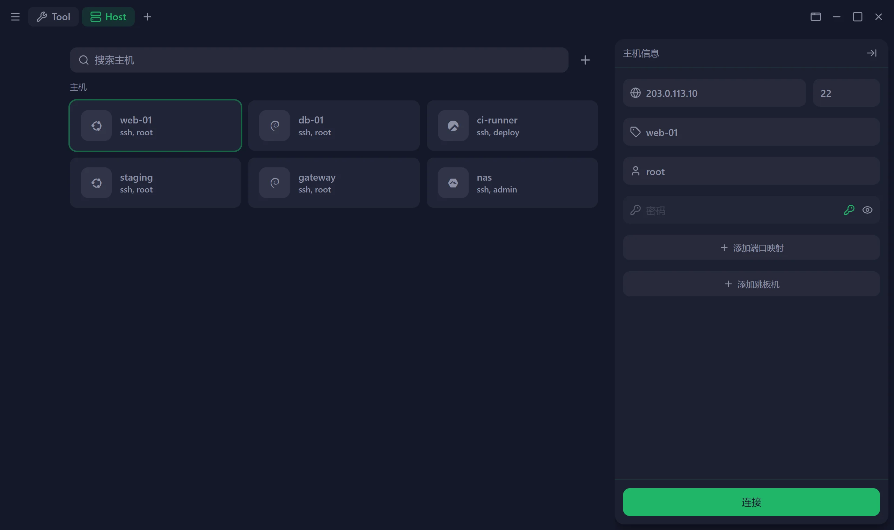
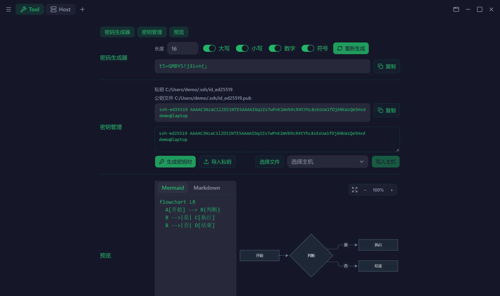
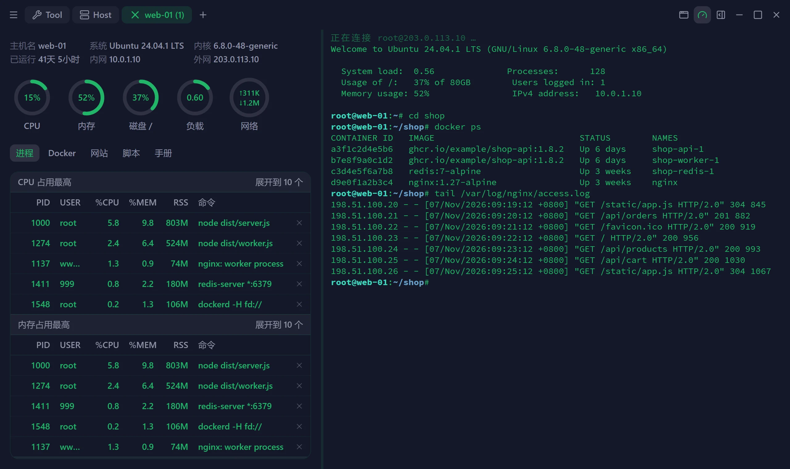
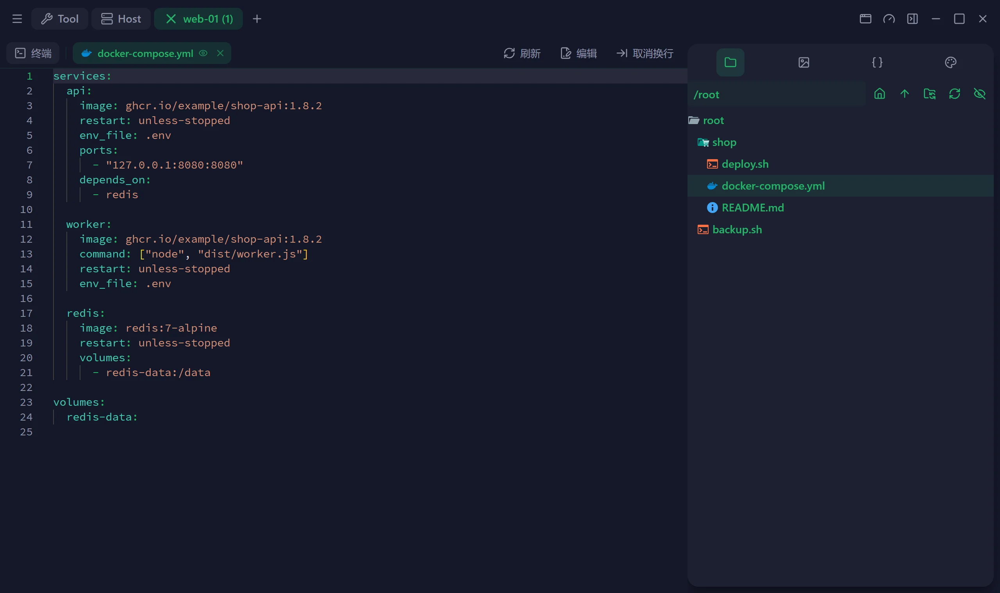
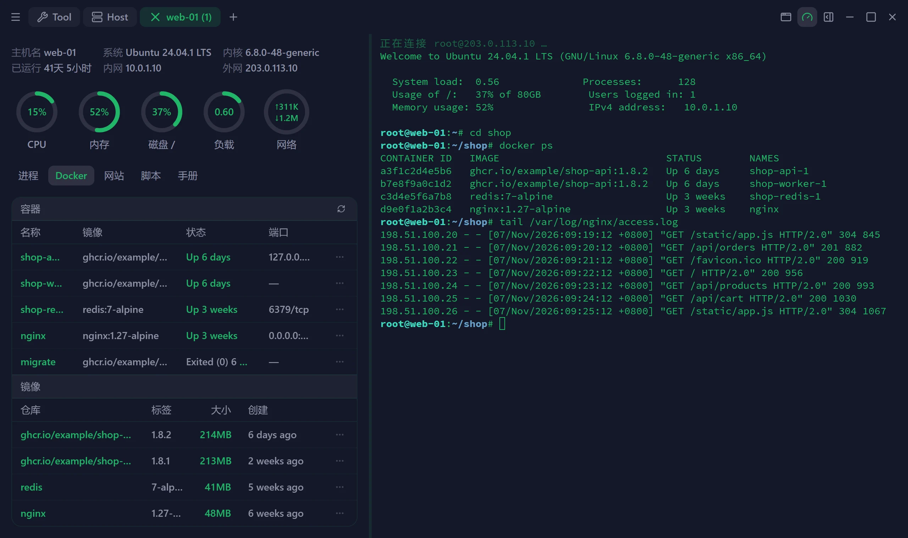
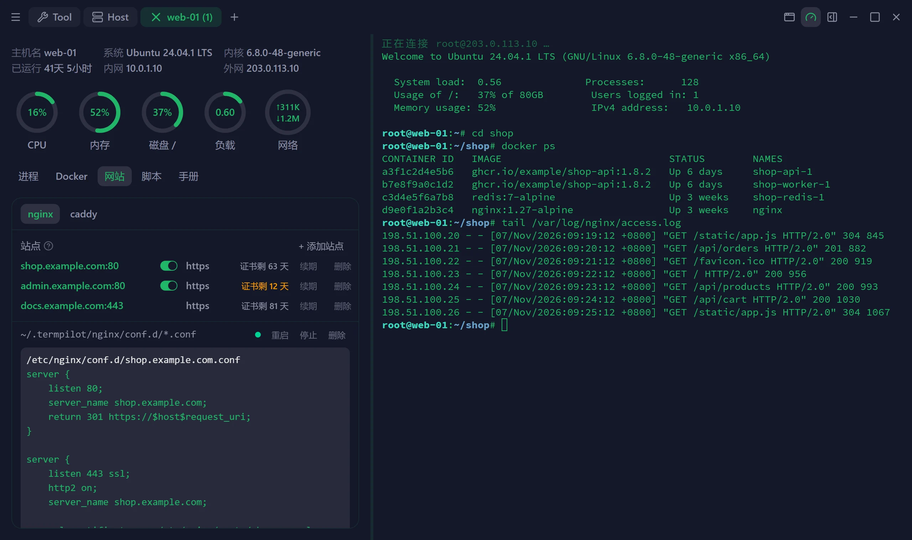
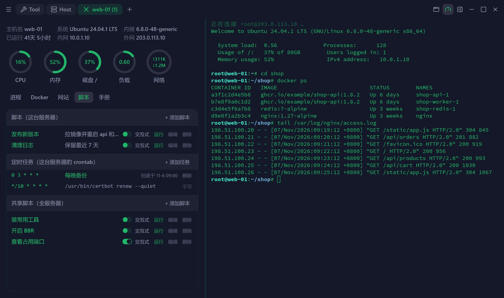
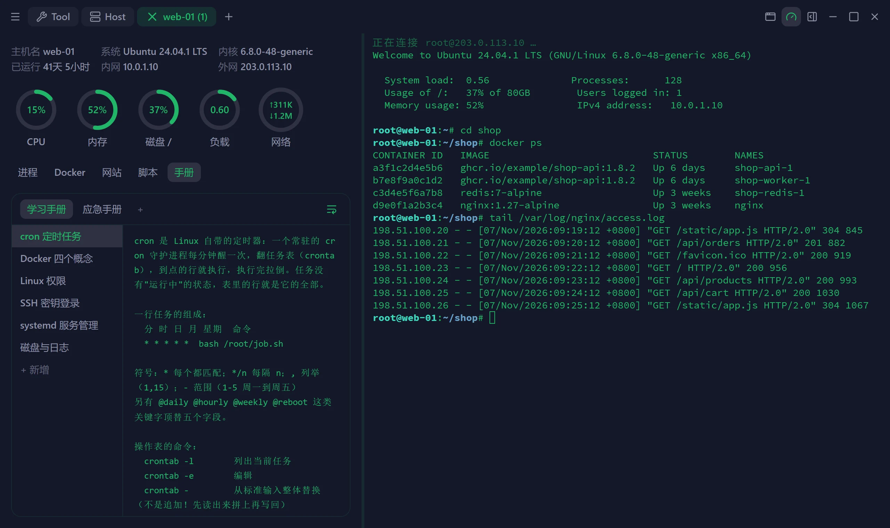
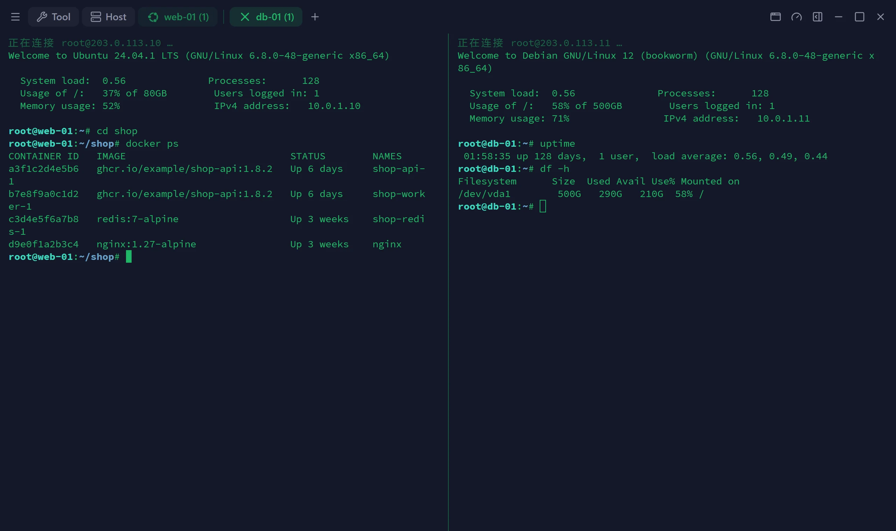
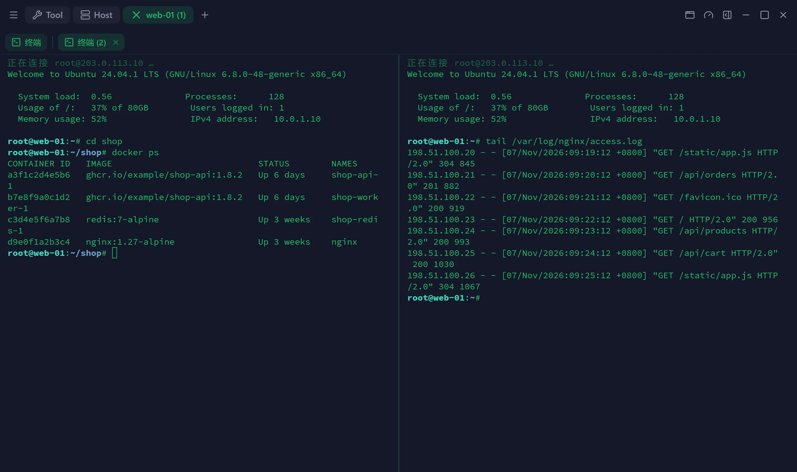
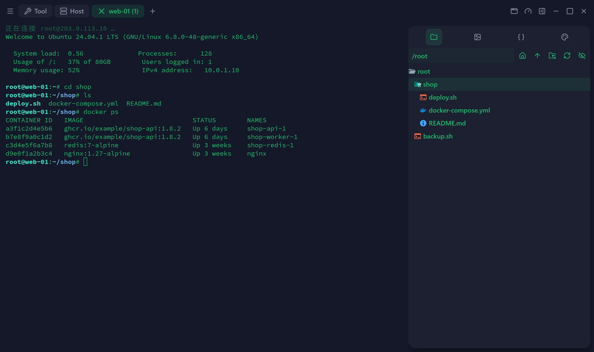
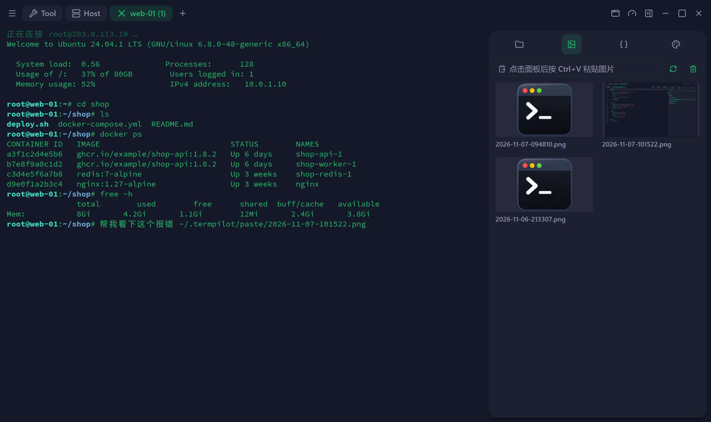
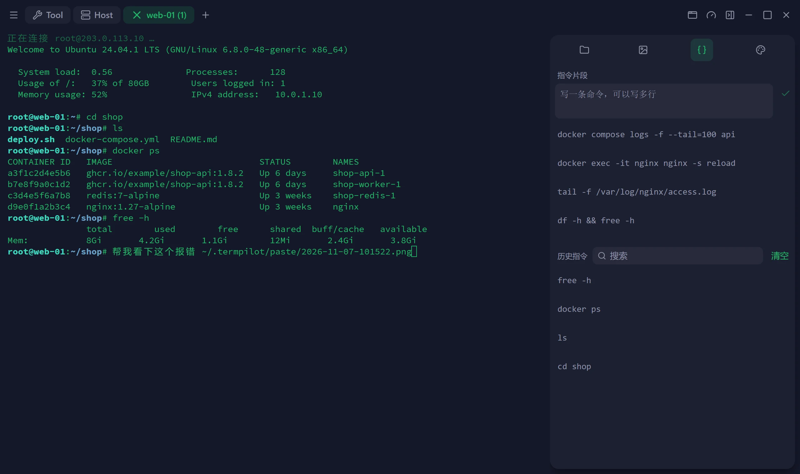
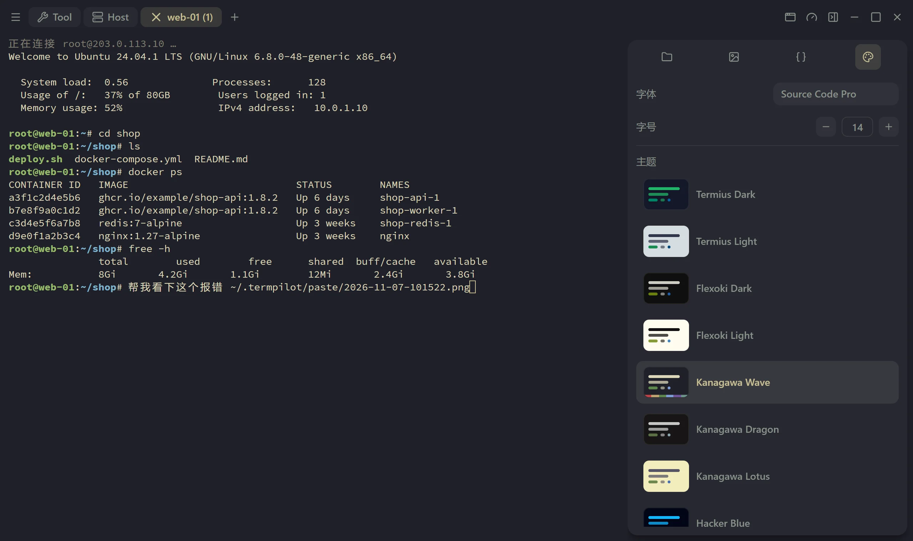
内置 MCP 服务。Codex、Kimi Code 这类 Agent 接上之后，可以直接用你保存的主机干活。
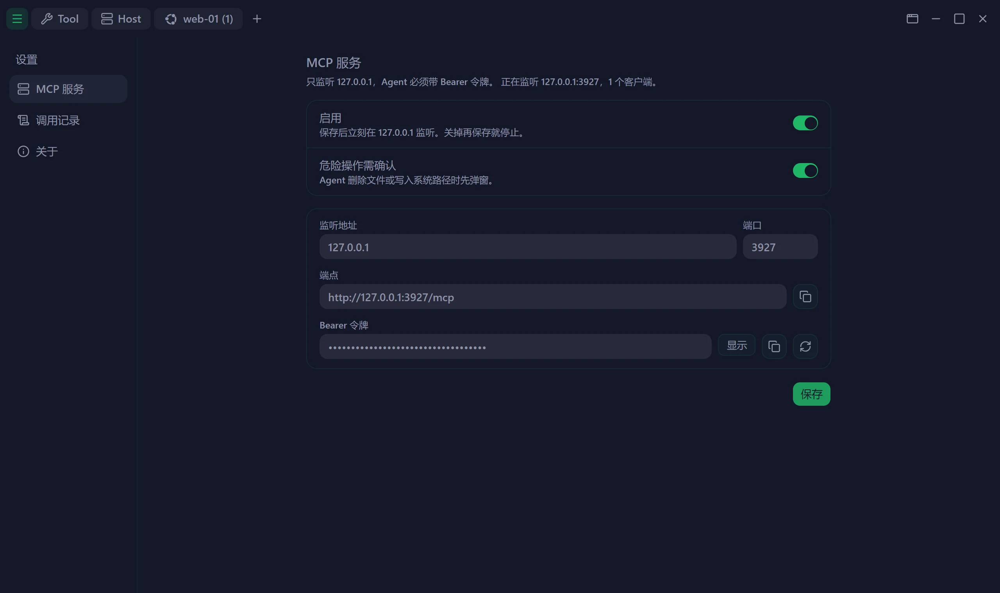
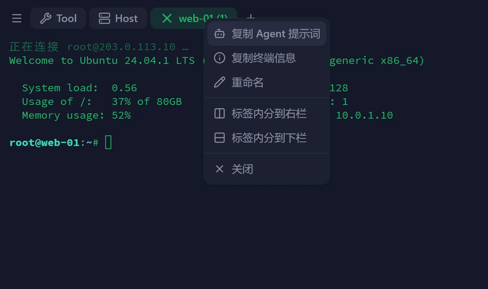
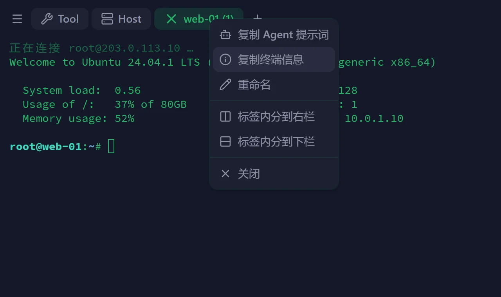
列出、打开、新建、修改已保存的主机，也能开本机终端。
connection_*后台执行拿到输出和退出码，也可以打进你正在看的终端。
term_exec · term_pty发按键、读屏幕，安装向导和 TUI 也能一步步走完。
term_write · term_read截当前一屏，或把整段滚动记录拼成长图。
term_screenshot浏览远端目录，上传、下载、改名、删除。
sftp_*只监听本机并校验令牌；危险命令先弹窗等你确认，每次调用都留记录。
127.0.0.1 · Bearer